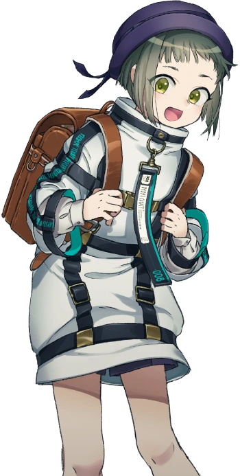
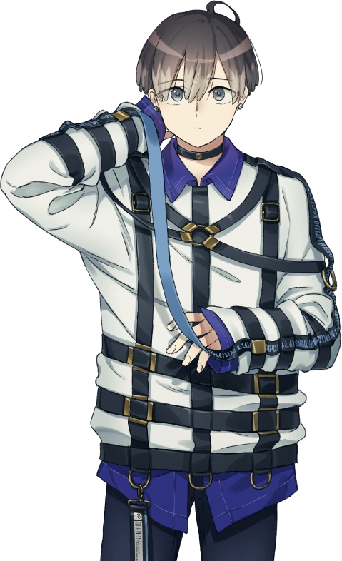
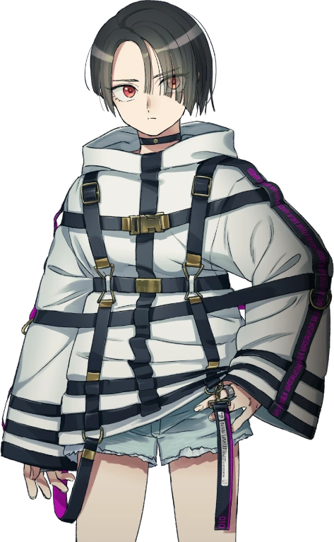

AMANE MOMOSE

008 — Amane is growing up in a cult.
This is more taken from information about Amane outside of the video than in. Her profile notes that she’s not afraid of the whole situation in Milgram because of her faith, and she says in her song preview that she “believes you are wrong.”
She also says “kami-sama” in her song, which is translated as “wise one,” but basically means God/deity. It’s very clear that religion is a strong theme with Amane, and by observing the video, it’s clear it’s a cult setting. You have the four robots who are in charge of everything, who seem to further the cult’s influence. The symbol for the cult appears to be the double faced cloud we see at the start of the video.
Amane being raised as the poster child for the cult.
I think that this is true largely due to the segment at 0:53, where she’s put on a podium to look cute. However, there’s also the part at 0:43, where Amane is with Yuri as they collect money. She seems to just be there to help advertise and draw attention, which would be in keeping with her being something like a mascot.
However, Amane is still in training, and has to meet strict requirements. In the scene at the podium, as Amane seems to be performing, she’s met with disapproval from Yuri and Gachata. Gachata flicks her on her forehead, knocking her over and leaving a mark on her forehead. However, Amane quickly regains her stride when Gachata helps her back up.
I don’t believe that it was really such a simple little flick, though. If the hit was enough to make Amane fall over and to leave a mark, my guess is that it was much stronger than that in reality. This MV is through Amane’s perspective, and she’s convinced herself that this isn’t a big deal. She seems to blame herself for messing up in the first place, as represented by the lyrics: “Even I can say ‘I’m sorry’/ Even I can have hope.” So, it seems that Amane has convinced herself it was just a little flick when it really may have been something much worse.
Four new cult members join.
These four cult members are represented by animals and first show up at 0:45, giving money to Yuri. They get more focus in the shot at 0:51, where they appear in the corners.
The animals are trying to join the cult, as we can tell by how they seem to stick around and follow the cult’s teachings throughout the rest of the video. They’re also giving Yuri money, which may be a joining fee or just general fees for being in the cult.
I’m now going to go through and talk about each of the four cult leaders in more depth.
Gachata is in charge of information and schedule.
Gachata’s intro segment shows them giving Amane a daily schedule, which involves waking up, studying, and moving boxes, which I’d assume indicates some sort of helpful action (the action likely varies from day to day). Amane listens and learns intently. Gachata also looks like an alarm clock, which signifies their role to tell people when to do things.
If Gachata is the one assigning Amane’s daily schedule and teaching her what she needs to know, then for at least Amane, and possibly for the cult as a whole, Gachata is likely in charge of controlling information. An essential part of cult ideology longevity is limiting information from the outside world and reinforcing the cult’s beliefs; I think that’s a large part of what Gachata does.
Yuri collects money for the cult’s operation.
How exactly Yuri collects money is a bit harder to follow, though if the animals are truthfully trying to join the cult, it’s likely either donations or a joining fee. In any case, Yuri appears to get lots of money for the cult, presumably helping it function.
Notably, though, when the animals give Yuri money at 0:45, the orange cat does not. I’ll expand on this later.
Gozake is in charge of publicity.
Gozake is seen teaching Amane how to sing at 1:18. After Amane starts singing, though, the animals show up and join in. The fact that they appear from the bushes to join makes me think that Gozake’s role isn’t literally about conducting a choir; it’s about making sure people hear the cult.
Amane is being used to sing because she’s the poster child, meaning that she’s the main one visibly advertising the cult. Gozake controls how Amane does that, though, and ensures everything is going according to plan.
Riyone causes “accidents.”
Instead of a scene where Riyone does something on camera after their introduction like all the other cult leaders, our view cuts to a stage light that falls onto the orange cat, the one who didn’t pay dues earlier.
Because the orange cat was the one who didn’t pay, it seems highly unlikely that this was the tragic accident it appeared to be. More likely, the light fell because someone–in this case, Riyone–intentionally caused it to. The fact that it’s a stage light alludes to the fact that this was a “staged” occurrence. Riyone then tells the animals and Amane that praying will make the orange cat feel better.
Riyone seems to control the thoughts of the cult members, sort of like Gachata does, but rather than doing so with control of information, they control the members with violence.
The cult frowns upon medical intervention.
The cult seems to believe that if someone is injured, it’s best to just pray for them without doing anything for them medically. Even as the cat cries with a few scratches on its forehead, they don’t take the time to address the issue.
I want to note that while the injury on the cat might look like a minor, painful scrape, it’s almost certainly much more than that. Similarly to Amane’s injury earlier, the damage is put into a cartoonish style and is likely minimized in Amane’s memory. If a stage light really fell onto the orange cat, it would do far more than just a little scrape. The cat must be in pretty severe pain for this injury.
Finally, it’s obvious that the cult frowns upon medicine because we see what happens when Amane tries to heal the orange cat. At 2:08, we see Amane holding a finger to her lips in front of the now-healed cat, presumably telling the cat not to let anyone know that she healed them. Instead, though, the cult leaders find Amane, and she’s severely punished. The fact that they punish her for helping one of their own members makes it clear that medicine is not trusted in the cult setting.
Amane is tortured until she’s fully indoctrinated.
The scene from 2:16 to 2:31 makes the torture part pretty clear. We see each of the cult leaders take their turns, repeatedly torturing Amane through different methods.
Riyone uses electricity, which is probably shocking her with electricity repeatedly.
Gozake’s features water, which is likely waterboarding.
Yuri’s looks like impact markers, which I’d wager is them physically beating Amane.
Gachata’s is the hardest to follow as it’s just a bunch of squiggles. Amane covers her ears, though, implying it’s noisy, so I’d guess it’s just verbal abuse, tearing into Amane verbally.
After this round of torturing, Amane clasps her hands in prayer (2:37) and proceeds to have a magical girl transformation, getting a magic wand, wings, and most importantly, a ribbon with the cult’s symbol on it. She proceeds to smile and dance with the cult leaders and animals, working together in harmony.
The fact that this seems like a “happy ending” points towards Amane’s indoctrination. Through the torture, it’s clear that she now believes she was wrong to disobey the cult, and is now dead set on being the perfect poster child for it.
But, where’s the murder? This MV has to be about death, after all.
Amane kills the “orange cat.”
In the happy ending sequence, the animals pop up on the screen again. However, instead of all four appearing in the four corners, they just appear on the sides of the screen–and the orange cat, who Amane previously healed, is missing.
I The animals are trying to join the cult, as we can tell by how they seem to stick around and follow the cult’s teachings throughout the rest of the video. They’re also giving Yuri money, which may be a joining fee or just general fees for being in the cult.
I’m now going to go through and talk about each of the four cult leaders in more depth.
Gachata is in charge of information and schedule.
Gachata’s intro segment shows them giving Amane a daily schedule, which involves waking up, studying, and moving boxes, which I’d assume indicates some sort of helpful action (the action likely varies from day to day). Amane listens and learns intently. Gachata also looks like an alarm clock, which signifies their role to tell people when to do things.
If Gachata is the one assigning Amane’s daily schedule and teaching her what she needs to know, then for at least Amane, and possibly for the cult as a whole, Gachata is likely in charge of controlling information. An essential part of cult ideology longevity is limiting information from the outside world and reinforcing the cult’s beliefs; I think that’s a large part of what Gachata does.
Yuri collects money for the cult’s operation.
How exactly Yuri collects money is a bit harder to follow, though if the animals are truthfully trying to join the cult, it’s likely either donations or a joining fee. In any case, Yuri appears to get lots of money for the cult, presumably helping it function.
Notably, though, when the animals give Yuri money at 0:45, the orange cat does not. I’ll expand on this later.
Gozake is in charge of publicity.
Gozake is seen teaching Amane how to sing at 1:18. After Amane starts singing, though, the animals show up and join in. The fact that they appear from the bushes to join makes me think that Gozake’s role isn’t literally about conducting a choir; it’s about making sure people hear the cult.
Amane is being used to sing because she’s the poster child, meaning that she’s the main one visibly advertising the cult. Gozake controls how Amane does that, though, and ensures everything is going according to plan.
Riyone causes “accidents.”
Instead of a scene where Riyone does something on camera after their introduction like all the other cult leaders, our view cuts to a stage light that falls onto the orange cat, the one who didn’t pay dues earlier.
Because the orange cat was the one who didn’t pay, it seems highly unlikely that this was the tragic accident it appeared to be. More likely, the light fell because someone–in this case, Riyone–intentionally caused it to. The fact that it’s a stage light alludes to the fact that this was a “staged” occurrence. Riyone then tells the animals and Amane that praying will make the orange cat feel better.
Riyone seems to control the thoughts of the cult members, sort of like Gachata does, but rather than doing so with control of information, they control the members with violence.
The cult frowns upon medical intervention.
The cult seems to believe that if someone is injured, it’s best to just pray for them without doing anything for them medically. Even as the cat cries with a few scratches on its forehead, they don’t take the time to address the issue.
I want to note that while the injury on the cat might look like a minor, painful scrape, it’s almost certainly much more than that. Similarly to Amane’s injury earlier, the damage is put into a cartoonish style and is likely minimized in Amane’s memory. If a stage light really fell onto the orange cat, it would do far more than just a little scrape. The cat must be in pretty severe pain for this injury.
Finally, it’s obvious that the cult frowns upon medicine because we see what happens when Amane tries to heal the orange cat. At 2:08, we see Amane holding a finger to her lips in front of the now-healed cat, presumably telling the cat not to let anyone know that she healed them. Instead, though, the cult leaders find Amane, and she’s severely punished. The fact that they punish her for helping one of their own members makes it clear that medicine is not trusted in the cult setting.
Amane is tortured until she’s fully indoctrinated.
The scene from 2:16 to 2:31 makes the torture part pretty clear. We see each of the cult leaders take their turns, repeatedly torturing Amane through different methods.
Riyone uses electricity, which is probably shocking her with electricity repeatedly.
Gozake’s features water, which is likely waterboarding.
Yuri’s looks like impact markers, which I’d wager is them physically beating Amane.
Gachata’s is the hardest to follow as it’s just a bunch of squiggles. Amane covers her ears, though, implying it’s noisy, so I’d guess it’s just verbal abuse, tearing into Amane verbally.
After this round of torturing, Amane clasps her hands in prayer (2:37) and proceeds to have a magical girl transformation, getting a magic wand, wings, and most importantly, a ribbon with the cult’s symbol on it. She proceeds to smile and dance with the cult leaders and animals, working together in harmony.
The fact that this seems like a “happy ending” points towards Amane’s indoctrination. Through the torture, it’s clear that she now believes she was wrong to disobey the cult, and is now dead set on being the perfect poster child for it.
But, where’s the murder? This MV has to be about death, after all.
Amane kills the “orange cat.”
In the happy ending sequence, the animals pop up on the screen again. However, instead of all four appearing in the four corners, they just appear on the sides of the screen–and the orange cat, who Amane previously healed, is missing.
This is presumably her victim, and they are very much a human. It appears that this is an adult person.
Amane seems to be lifting a pole and bashing Es with it until they die. So, Amane must have bashed the pole into the person represented by the orange cat until they died.
Where does this happen in the video? Well, if we’re looking for a time when Amane, post-indoctrination, waves around a long pole shaped object, I think that the answer is pretty clear.
She gestures her wand forwards in a way that could be very similar to a bashing motion at 2:52 with a bright smile on her face. This shows that Amane probably killed this person–and was happy about it.
It’s unclear whether the cult instructed her to kill the person, or the theory which I find more likely: that Amane wanted to show how much of a good girl she was now by fixing her previous mistake, re-harming the orange cat in the way Riyone intended with the stage light. With the orange cat dead, she’d fixed all of her previous mistakes and could move forward as the good cult member she aspires to be.
And now, a summary of my theory.
Amane grew up in a cult run by four leaders: Gachata, Yuri, Gozake and Riyone. Though she was trying her best to be the cult’s poster child, she often messed up. This culminated when one of the four new recruits, the orange cat, failed to donate to the cult. Riyone stages an accident, and the cat is injured.
Amane tries to heal the cat rather than praying the injury away, and is thoroughly punished. By the end of her punishment, she’s revised history, believing she was in the wrong, and fully believing in the cult. She kills the orange cat, in reality an adult human, to correct her mistake and officialize her transformation.
MIKOTO KAYANO

009 — Mikoto likely (unfortunately) has Dissociative Identity Disorder (DID).
I hope that it’s something different, and it isn’t actually this, but it seems like this has to be the case. Mikoto seems to go back and forth between two selves, one “innocent” and one “evil.” Kotoko even name drops DID when she shows up in Mikoto’s audio drama.
I say unfortunately because DID is often represented as there being one good side and one evil side in a serial killer type context, and it’s not good for representation. However, for now, it seems like that’s the kind of character that Mikoto is, and I can’t really theorize properly without making this assumption.
For the sake of the theory, I’ll be referring to the two selves as Nice Mikoto and Evil Mikoto.
Mikoto is represented by three different tarot cards.
These three tarot cards are the Hanged Man, the Fool and the Devil. I’ll talk a bit about each of them.
For anyone who doesn’t know, tarot cards are read differently based on whether the card is flipped with the orientation up, so that the card looks normal (upright) or backwards, so that the top of the picture ends up at the bottom (reversed). This will be important to understanding the meaning of the various tarot cards. I’m by no means an expert, but I’ll share what I do know and what a quick google search can tell me.
The Fool represents Nice Mikoto. It’s the first of the major arcana, and when upright, it represents beginnings, innocence and a free spirit. This seems to be the Mikoto that we see frequently in the Milgram prison: someone who seems generally likable and easygoing.
The Devil seems to be associated with Evil Mikoto, which makes sense, because it represents sexuality and the concept of the shadow self, referring to a self that exists out of the conscious mind. Because Evil Mikoto exists as the shadow self in Nice Mikoto’s mind, I think that it fits rather well for him.
Finally, the Hanged Man is the obvious one, considering it’s literally on Mikoto’s shirt. When Upright, the Hanged Man represents surrender, letting go and new perspectives. When reversed, it means indecision and resistance. I believe that the Hanged Man represents Mikoto as a whole.
However, while the Hanged Man is the whole Mikoto, I believe that the upright and reversed sides represent the two Mikotos. The upright Hanged Man would represent Evil Mikoto, and the reversed would represent Nice Mikoto. This will make more sense as I go through the rest of the theory.
Evil Mikoto kills a guy with a baseball bat.
Coming from Undercover, we all knew that this was coming, considering that his kill shot is one of the more clear cut ones.
Like, that’s clearly a baseball bat. Even more, he clearly kills someone with a baseball bat in the MV itself.
We see the victim attempting to crawl away, and even see from the victim’s perspective at times in the video. Once he’s dead, Mikoto presumably puts his body in a trash bag and throws it away, along with his bloody hat.
The hat is actually what clues us in to the fact that, in this video, we only see one murder. It would be possible that the two verses show two different scenes, but considering Mikoto wears the hat during both scenes, but throws it away along with the body, implies that there’s at least only one that we’ve seen.
Evil Mikoto “creates” Nice Mikoto.
After the murder, Mikoto goes back to his apartment to clean up after the murder. However, after he’s taken off his shirt and sits on the couch, we cut back to Nice Mikoto, who wakes up from sleeping on the couch in the crumbled room. He groggily draws a tarot card in front of him, which comes up blank.
The blankness of this card, to me, means that Nice Mikoto does not yet have a fate, because he’s just come into existence. This waking up in this mind scape is the first time he’s really existed, because after the murder, Evil Mikoto somehow created him. Whether it was to try to ease his own guilt by having a self that didn’t know about it (sort of similar to the denial we see in Mahiru and Futa) or to try to appear less guilty to Es and to us (as a protection mechanism not from himself, but from society), I’m not sure. But in any case, I think that this is the moment that Nice Mikoto came into existence: shortly after the murder. If this is the case, Evil Mikoto is the original.
This also makes sense with the interpretation of the Hanged Man. If Evil Mikoto is the upright Hanged Man, he represents surrender, letting go and new perspectives, which makes sense with him surrendering control to Nice Mikoto. Similarly, if Nice Mikoto is the reversed Hanged Man, it makes sense that he would indicate resistance to Evil Mikoto, as he likely has more morals.
These interpretations of the tarot card also signal that Evil Mikoto is the original, because he’s the upright, or default state, of the Hanged Man. The Hanged Man, and therefore Mikoto, must be inverted for Nice Mikoto to appear.
Finally, we never actually see Nice Mikoto leave the crumbled room. Like, he’s there, and he looks around and stuff within the crumbled room, but unlike Evil Mikoto, who we see both at the train station and at the apartment, he’s confined to this space.
The crumbled room represents Mikoto’s mind.
This is the only way that this space can make sense, considering that both Mikotos can appear here at the same time. Inside his head is the only place that these two can meet face to face. Similarly, it’s inside his mind that Nice Mikoto spawns into existence, and in his mind where Nice Mikoto is mostly trapped, considering Evil Mikoto was the one who existed in the real world first.
From Mikoto’s mind, Nice Mikoto can see some of Evil Mikoto’s actions. That’s what the mirror scene at 1:41 means. We see Nice Mikoto appear in the mirror, looking alarmed, and then see Evil Mikoto, looking somewhat amused. While Evil Mikoto is in the shower in the real apartment, though, Nice Mikoto stays within the crumbled room, and breathes heavily, seemingly really shaken up by what he’s seen.
Nice Mikoto figures out what Evil Mikoto is doing.
After this scene where Nice Mikoto sees Evil Mikoto showering off the blood, he returns to the tarot cards and draws the Devil, which represents Evil Mikoto. The card, and then the room turns red, showing that Mikoto’s mind is in disarray at this revelation.
Understandably, Nice Mikoto seems extremely shaken up by this realization. He sits on the floor in shock, and the lyrics give a hint to what’s going through his mind: “I’m already the fake one.” This is even more confirmation that Nice Mikoto is not the original; if so, why would he think of himself as fake?
We then see a replay of Mikoto returning to his room, as though through a security camera. I think that this is literal. If Nice Mikoto was there in real life, trying to figure out what he’d done, he could presumably set up and leave a security camera in his own apartment. By doing this, he can track what Evil Mikoto does.
Nice Mikoto decides to go along with Evil Mikoto.
After the blood bath, in which Evil Mikoto smokes a real cigarette (not an e-cigarette, which Nice Mikoto says is all he smokes in the interview questions), we go back to the crumbled room with Nice Mikoto again. Here, he moves his mouth along with the lyrics, which he never has before. This could signify that Nice Mikoto is going along with the charade; he, in the crumbled room, is singing the same song.
However, no matter how much I look, the moving of the lips don’t seem to match up with the sounds of the lyrics. I’m sure that the animators can do lip synching, as we see it in other videos (like Shidou’s, for instance), so what happened here? It looks more like he’s talking.
In fact, to me, it looks like Mikoto is speaking to explain something, or to justify himself. He’s talking to no one, rationalizing things to himself. What we’re witnessing here is Nice Mikoto rationalizing Evil Mikoto’s behavior, trying to convince himself it’s alright.
He then sweeps up the tarot cards, and Evil Mikoto appears and offers him the upright Fool. Now, while the Fool is upright to Nice Mikoto, it’s reversed to Evil Mikoto. This is Evil Mikoto going to Nice Mikoto and letting him in on the charade. He’s saying, “this is who I need you to be.”
Finally, Evil Mikoto presents Nice Mikoto with the tarot card for Death. Now, while Death might seem literal in the context of Milgram, what Death means in tarot cards is actually personal transformation and change. Evil Mikoto is giving Nice Mikoto the power to be in on it with him, so that the two of them can surrender control to each other instead of just one way.
Nice Mikoto takes him up on the deal.
The lyrics convey this one pretty well. Leading up to the end, it sounds like he’s trying to negotiate his position and understand. He says “please let me out of here” and “please tell me it’s a mistake, that it’s a lie.” He clearly doesn’t agree with any of this, and he makes it clear that he wants out. This is also consistent with the indecision angle of the reversed Hanged Man; Nice Mikoto can’t decide what to do.
However, the last line makes it clear that Nice Mikoto will accept the deal. When Evil Mikoto hands him Death, therefore explaining and handing over the power to change, the lyric plays, “I’ll forgive you if you tell me now.”
Well, it seems like Evil Mikoto did tell him then with the passing of the Death card, and it’s likely that Nice Mikoto forgave him. They’re in this together now.
This is even more emphasized by the beginning and ending of the video. At the beginning of the video, Mikoto sets up the camera in the crumbled room. During this segment, we see the reversed Hanged Man and the upright Fool in the corner (0:10). These represent Nice Mikoto, implying he set the camera up. Then, at the end of the video, Evil Mikoto kicks the camera away.
I think that Nice Mikoto is here to help Evil Mikoto get away with his crimes. He’s playing dumb so that we assume that he’s innocent in the matter, but in reality, he sets everything up too, just like he did with the camera. Once we saw Nice Mikoto and Evil Mikoto got what he wanted, he kicks the camera away; their presentation is over.
We’re voting on Nice Mikoto.
I can’t really see a way around this one given the audio drama. In short, despite a seemingly magically enforced rule that prevents prisoners from harming Es, Evil Mikoto is able to do just that. That means that Evil Mikoto isn’t a prisoner; Nice Mikoto is. Therefore, I think any votes are meant to comment on his morality, though they naturally share a body.
And now, a summary of my theory.
Evil Mikoto commits murder at a train station with a baseball bat. Then, after going back to his apartment to clean up, he “creates” Nice Mikoto, a self to help him get away with the crime.
At first, Nice Mikoto is unaware, but he eventually figures out what happened. Though he’s freaking out and sort of in denial about the whole thing, he decides if Evil Mikoto tells him what happened, he’ll forgive him. Evil Mikoto does exactly that, and now the two are working together to try to fool Es.
KOTOKO YUZURIHA

010 — Kotoko is a vigilante.
She very clearly wants to persecute violence, focused on the more powerful who harm the weak. From the articles she looks through in the video, this means children, elderly and anyone else she doesn’t think can defend themselves.
We see her beating up a few people over the course of the video, trying to make it so that they’ll stop doing what they’ve done. At 1:40, there are the following lyrics:
“I didn’t mean to offend,
I won’t do it again”
How many wins in a row?
Kotoko clearly defines “winning” as beating someone up until they’re so afraid of her that they’ll never do such a thing again. They know that if they repeat the offense, Kotoko will come for them again, and that’s enough to deter them from continuing on.
These lines bring us to an important part about Kotoko:
Kotoko does not kill her targets.
While she’s obviously killed at least one person to be in Milgram, I don’t think that she usually kills her targets. Specifically, I think that the only one she kills is the man at the end.
In Undercover, Kotoko is seen kicking Es to kill them.
This is the same method she uses on the guy at the end; we see her kicking and punching him in between other shots in the video. Finally, by the end, it looks pretty clear that the guy is dead.
This is the only person I think that Kotoko killed. It fits with what we’ve seen of her kill, so it’s not like there’s some outstanding murder method that’s unresolved. She seems to want to be a deterrent to criminals’ actions rather than a source of removal.
Also, there’s the appearance of her fangs at 2:47. Even as Kotoko lunges forward with her mouth open earlier in the video (2:09), she still doesn’t have the fangs. I think that the appearance of the fangs toward the end of the video shows her achieving her first kill, and the lack of fangs beforehand therefore indicates that she hadn’t killed before.
Anyways, going back to the beginning, I want to talk a bit more about Kotoko herself, rather than her actions.
Kotoko pursues vigilantism because she doesn’t like herself very much.
Kotoko shows signs of not really taking care of herself through lyrics such as “Feeding on food so I don’t burn out” and “Becoming light headed again.” She seems to do the bare minimum to take care of her health, focusing on what she’s capable of rather than making sure she stays healthy and lives a fulfilling life.
She also seems to not know what she’s doing. Unlike later in the video where she clearly defines a win as someone no longer committing their crimes, at the beginning, the lyrics ask, “What is winning or losing?” She doesn’t have as much of a purpose.
The line “the surrounding net covered with poison” also indicates that she feels trapped, and like that trappedness is killing her. She’s searching for an escape, and so she jumps into action.
At 0:38, we see her looking through articles about weaker people who were wronged, but her gaze is going everywhere, seeming frantic as though she’s searching for something. That something is a purpose, something that she can do to feel useful.
Kotoko starts to enjoy the violence, which somewhat improves her self esteem.
Kotoko appears to get much more confident over the course of the MV, becoming more authoritative with her punishments rather than wondering what she’s even really doing. Her search through articles becomes more focused and less frantic (1:25), unlike before.
Later on, towards the end of the video, a lyric even says “Laugh and I can get to like myself” (2:43). The laughter, presumably at the violence she’s causing, signifies that she’s enjoying it–and that that enjoyment feeds into her ability to like herself. If she likes the violence that she causes, and that makes it so she’s doing something really good for the world, then she can like herself as the one to do it. That’s why she’s so obsessed with being in the right; she has to, or else she’ll hate who she is.
The biggest signifier of her starting to enjoy vigilantism, though, is in the lyric at the end of the chorus. At the beginning, the lyric is written as “I’ll gouge you out with my fangs.” However, for the third and fourth (final) instances, it’s written as “I want to gouge you out with my fangs.” It’s switched over from something that Kotoko does because she doesn’t know how else to have a purpose to something that Kotoko enjoys and actively wants to do.
Kotoko has inspired others to vigilantism, but works alone.
The beginning scene is what makes me think that there are others. When she looks at the camera and her eyes begin to glow, as do a wolf’s, many other eyes follow. I think that this is meant to be Kotoko’s influence, spreading through others who will start to pursue this path as well.
However, I think that she must generally work alone. We never really see Kotoko hunting down someone with anyone else, and the room where she has all the articles strung together tends to only have her in it. If she was directing others, I think we would have seen it.
There’s also Kotoko’s associated image in Undercover, which seems to just be her.
I can’t really think about what this image provides for us from a theorizing standpoint–other than the fact that Kotoko is by herself. I think that this is meant to clue us into the fact that Kotoko is a “lone wolf” and tends to work by herself. She’s obviously willing to ally with others (such as Es), but her preference is working alone.
Kotoko was inspired to vigilantism herself.
This part gets pretty specific, but it mostly has to do with the part where images flash by really fast at 3:02.
As far as I can tell, it’s a memorial. It’s not in a graveyard or anything fancy, but to me it definitely looks like it could be with the flowers. (If someone has a translation of this text though, please let me know, because I have no idea what it says.) Basically, I think that someone Kotoko cared about died. Even if the text contradicts this being a memorial, I still think there’s reason to think that someone died, as I’ll detail from here.
It also makes the line “Every time death comes / The soul moves forward” make sense with the theory that Kotoko hadn’t yet killed anyone at that point in the video. She’s referring to her attempts to move forward past this death, and the traumatic event that surrounded it.
Whoever this person was, they were the one who inspired her to vigilantism. I can conclude this because the quick flash part is actually the second time that this image appears. The first is at 0:37, right before Kotoko goes to frantically search the articles for the first time. I think that Kotoko was feeling like she lacked purpose, visited this memorial, and then decided to pursue those she felt had done the unforgivable: preyed on the weak.
However, who exactly is this person?
I think that this girl is Kotoko. The hair and skin colors are similar, and the bangs look similar to the bangs on the left side of Kotoko’s face (her hair is parted for the right side, so that part is about the haircut). Kotoko has said that she hasn’t endured trauma and that people with trauma aren’t the only ones allowed to want justice. I think that that’s stretching the truth a bit; she said it in her interview, so she could be biased/lying. However, more likely, I don’t think that she considers this event as something that happened to her–it happened to someone else.
This little girl also appears like she might be dead, but the hammer is no longer in the man’s hand; it’s on the floor.
I think that, whoever this little girl is, she interfered as the hammer guy was swinging it at Kotoko. She diverted his attack and got him to drop the hammer, but she died as a result. Kotoko was able to escape.
Kotoko doesn’t consider this her trauma or suffering, even though she was obviously in danger and saw this very traumatic event. She considers it the trauma of this other girl, who died to save her. I think it’s her memorial that we see.
Kotoko identifies herself in the past as the weak one, and this little girl as the one who saved her. To find purpose and to pay back the debt she feels, Kotoko feels she must protect those who are weak now that she’s stronger.
Kotoko tracks down this specific man to kill him.
Kotoko pays someone at 2:19, then tracks down someone pulling a little girl into a warehouse. It looks like it could be the same one that the hammer scene happened in.
Now, it seems pretty likely that this guy is the same guy. It seems weird that he looks like he’s about the same age, even though Kotoko has aged up. Kotoko also sometimes changes outfits in this video, showing that people can wear different clothes, but this is the same outfit exactly.
I think that this is meant to imply that he looks exactly the same as Kotoko remembers him. That might not be literal; in real life, he’s probably changed a bit. But from Kotoko’s perspective, she remembers him clearly, and this is him exactly.
While the other criminals are people Kotoko can just beat up and move on with her life, she’s not going to be as lenient with this guy given their history. So, she takes on her first kill, exacting revenge many years later
And now, a summary of my theory.
Kotoko was in a traumatic scenario when she was younger where she was nearly killed by a man. Another little girl died to save her, and Kotoko escaped. However, as an adult, Kotoko now feels she lacks purpose and struggles to care about herself.
When visiting the memorial of the little girl, though, she decides to try to protect others who are weak in the way she was protected when she was little. This develops into her becoming a vigilante, and over time, she begins to like both her work and herself. By the end of the video, she pays someone to track down her earlier tormentor and exacts revenge on him, making him the first and only person she’s actually killed.